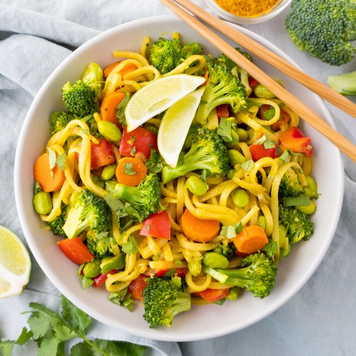

Coconut-Turmeric Rice Noodles with Edamame, Veggies & Cilantro

Total Time
35 min
Nutrition (Per Serving)
697.8 kcalCalories
19.8 gProtein
88.9 gCarbs
31.9 gFat
Full nutrition table
| Calories | 697.8 kcal |
| Total fat | 31.9 g |
| Saturated fat | 24.2 g |
| Trans fat | 0 g |
| Cholesterol | 0 mg |
| Sodium | 209.3 mg |
| Carbohydrates | 88.9 g |
| Fiber | 11.7 g |
| Sugars | 14.3 g |
| Protein | 19.8 g |
| Potassium | 1274.7 mg |
| Calcium | 151.7 mg |
| Iron | 5 mg |
| Vitamin A | 777.9 IU |
| Vitamin C | 170.4 mg |
| Vitamin D | 0 IU |
Cookware
Ingredients
- 2 crownsbroccoli
- 2 mediumcarrots
- 1 small bunchcilantro
- 1 (13.5 fl oz) cancoconut milk
- 2 cupsedamame
- 4 clovesgarlic
- 2 (1 inch) piecesginger root
- 1lime
- 2red bell peppers
- ½ mediumred onion
- black pepper
- fish sauce
- flat rice (pad thai) noodles
- honey
- salt
- turmeric, ground
- virgin coconut oil
Steps
- Fill a large pot halfway with hot water (from the tap) and bring to a boil. Remove from heat and add rice noodles. Soak for 10 minutes or according to package directions; drain in a colander and rinse.10 oz flat rice (pad thai) noodles
- Meanwhile, wash and dry the fresh produce.2 crowns broccoli
2 medium carrots
2 red bell peppers
2 (1 inch) pieces ginger root
1 lime
1 small bunch cilantro - Place edamame in the colander and rinse under hot, running water (from the tap) to defrost; set aside to drain.2 cups edamame
- Separate broccoli into bite-sized florets and cut stems into smaller pieces. Place in a large bowl.
- Peel, trim, and cut carrots crosswise into ¼-inch thick rounds. Add to the bowl with the broccoli.
- Preheat a large skillet over medium-high heat.
- While the skillet heats up, trim, seed, and medium dice bell peppers; add to the bowl.
- Once the skillet is hot, add oil and swirl to coat the bottom. Add veggies, salt, and pepper to the skillet; cook, stirring occasionally, until tender-crisp, about 5 minutes. (Reserve bowl for later use.)1 tbsp virgin coconut oil
½ tsp salt
¼ tsp black pepper - Meanwhile, peel and mince ginger and garlic. Peel and small dice onion.4 cloves garlic
½ medium red onion - When the veggies are done, return them to the reserved bowl.
- Return skillet to medium-high heat, add more oil, and swirl to coat the bottom. Add garlic, ginger, and onion to the skillet; cook, stirring occasionally, until starting to soften, about 2 minutes.1 tbsp virgin coconut oil
- Add coconut milk, water, fish sauce, honey, and spices to the skillet; stir to combine the sauce and bring to a simmer.1 (13.5 fl oz) can coconut milk
½ cup water
2 tbsp fish sauce
1 tsp honey
1 tsp turmeric, ground
½ tsp black pepper
¼ tsp salt - Once the sauce is simmering, add drained rice noodles, edamame, and cooked veggies to the skillet; stir to combine. Continue to cook, stirring occasionally, until noodles are warmed through and sauce has thickened slightly, 3-4 minutes.
- Meanwhile, cut lime into wedges; set aside for serving.
- Shave cilantro leaves off the stems; discard stems and mince the leaves. Add cilantro to the skillet, stir to combine, and remove from heat.
- To serve, divide saucy noodles and veggies between bowls; top with a squeeze of lime and enjoy!